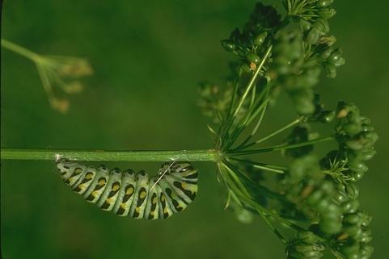

Boundary Detection with Sketch Tokens
At left, the original picture and on the right the segmentations that my boundary detector found.
In this project, I implement sketch token boundary detection to find boundaries in images. Boundary detection is still one of the most difficult tasks in computer vision. Alternative methods include the Canny and Sobel edge detectors. Even better than these is the Pb boundary detector, which does considerably better by looking at texture and color gradients in addition to intensity. The Pb detector does especially well by suppressing false positives-a task that is very difficult for these other edge detectors. The global Pb detector takes it a step further by using contour information.
The sketch boundary detector, as implemented by Lim, Zitnick, and Dollar, rivals the performance of the global Pb detector. In my full implementation of this detector, I did find results that were similar to the gPb. Even in my baseline implementation, I found that I was still able to outperform Canny and Sobel.
Below, I will discuss two different implementations of the Sketch Boundary Detector. The first one that I used simply based features from channels that I computed. The second, extra credit, implementation used channel descriptors as well as information about how similar cells in each image patch were to one another. With these additional features, I was able to achieve an f-score of .68. The baseline implementation (without self-similarity) receives scores between .57 and .62 (depending on whether or not daisy descriptors were used).
Implementation
Feature representation
The largest part of this project was the feature representation aspect. Image features were used both in training and testing. There are three significant parts of representing features, which are described below.
An example of a segmentation that was found by my detector.
Obtaining Channels: In order to describe an image, I used a 14 dimensional channel feature as described in Lim et. al. The first three channels describe the color and are found by getting the LUV color space of an image-converting it from its rgb form. For the remaining channels, I blurred the image with three different Gaussians of sigmas 0,1.5, and 5. I then took the overall gradients (square root of the x and y derivatives squared) for these as my next three channels. For sigma=0 and 1.5, I took four oriented gradients each at orientations of 0, pi/4, pi/2 and 3pi/2. I was interested in the magnitude so I took the absolute value and did not need to compute the pi, 5pi/4, etc. Finally, I blurred all of the channels with a Gaussian of sigma=1. The channel implementation was applied to the entire image. In order to get features to represent each pixel a patch of size 15x15x14 (14 being the number of channels) was converted to a row and that became the feature descriptor.
Self-Similarity: I implemented the extra credit self-similarity features, which proved to be extremely useful in improving my results. I was able to increase my F-score by more than 8%. Self-similarity is used for each patch of interest. Unlike the channel part, I only used the function get_self_similarity on specific patches of interest. That is, after obtaining the channels, I would pass certain patches to the self-similarity function and it would return additional information. The self-similarity features were appended on to the channel features. To get the self-similarity, I simply broke up my patch of 15x15 into smaller cells of size 5x5 for a total of 9 cells. Then for each channel, I compared the sum of the elements in one cell with the sum of the elements in each of the other cells. Essentially, that meant taking each pair of cells and computing their difference. These differences were the additional information that was appended to each feature descriptor.
Daisy descriptors (only used in training): Initially, when obtaining feature descriptors, I gave them an accompanying label of positive or negative based on whether or not a certain pixel was a boundary. This meant each feature had a corresponding binary label. It was this baseline implementation that actually gave me the best results. Interestingly, I found that when I used Daisy descriptors (which purportedly improve the f-score by .05) my performance score decreased by as much as .03. Daisy descriptors involved labeling each feature by what type of boundary it was. I had 10 different boundaries. I used the daisy descriptors for each image for positive examples, clustered them into 10 different kinds of boundaries and then finally labeled the features by which sketch token they belong to.
Training the classifier
The training data for my set was based on the Berkely Segmentation Data Set (BSDS) 500. This data set includes 500 image each with at least four "ground truth" human segmentations. I trained my classifier with 200 of these images and used the human labels to determine whether or not a pixel is a boundary. The criteria for a pixel being a "boundary" means that a human had labeled it as part of a segment, which implies that all of my positive examples are 15x15 patches centered on a boundary pixel. In order to train my classifier, I took 60,000 samples (30,000 each for positive and negative) from the BSDS set. I then obtained feature descriptors and labels as described above. My implementation differs from the Lim et. al paper here in that I used a random forest classifier with a parameter of 20 trees and only passed my data through once (as opposed to the paper's method of doing multiple passes and combining the tree). Since obtaining the features and training the classifier can be slow, I chose to save my forest trainer to save time on future runs.
Detecting boundaries
After training my classifier, I then proceeded to detect boundaries. All I needed to do here was loop through every pixel of an image, retrieve its features, and pass it to my trained forest and then use the result to determine whether or not it was a boundary. This function returns a probability map showing how likely it is that each pixel is a boundary. This is the slowest part of my program because it involves checking every pixel of an image. Without using self-similarity, ten images still run in less than 3 minutes.
Overall performance and Optimizations
On the left, my baseline implementation with an F-score of .61. On the right, my F-score of .67. This is my average precision without daisy features and using self-similarity.
My baseline implementation (without self-similarity) achieves an f-score of .61. The f-measure is the harmonic mean of precision and recall. I found that there were several improvements that greatly increased my score. The main one was blurring the pb map returned by detect_sketch_tokens and then using non-maximum suppression. I found that a Gaussian with sigma=2 worked the best. This increased my f-score by about .04. It also helped to blur my channels. In addition, using the daisy descriptors actually hurt my score by up to .03. I also found that it was possible to run into the problem of not sending in enough "diverse training data," which could decrease my accuracy by .1 or more. I attempted to improve my random forest classifier by sampling the most frequently occurring positively-labeled pixels instead of randomly choosing them for each image. The problem I encountered here was that the classifier was not able to generalize to all image patches and therefore did not perform as well on the test set. Using random positive and negative samples from each image proved most effective.
The largest boost by far was found when I used the self-similarity features. This is displayed in the right-hand side precision recall curve. I found that using a patch of size 15x15 and cells of size 5x5 were the most effective. This increased my f-score by as much as .08. This extra credit feature had an enormous positive impact. The images contours displayed below are from this implementation of the project. The trade off is that it means that every pixel of every test image has over a 1000 more elements in its feature descriptor, which can cause my program to run very slowly in detecting sketch tokens in test images.
Results from implementation
The results below show the original image, the boundaries detected, and finally the conversion of it to a binary image.

|

|


|

|
Results by comparison
The results below show the original image and the boundaries detected. My detector does best where there is less "background" noise.
|
|
|
|
|
|
|
|

|
|  |

|

|